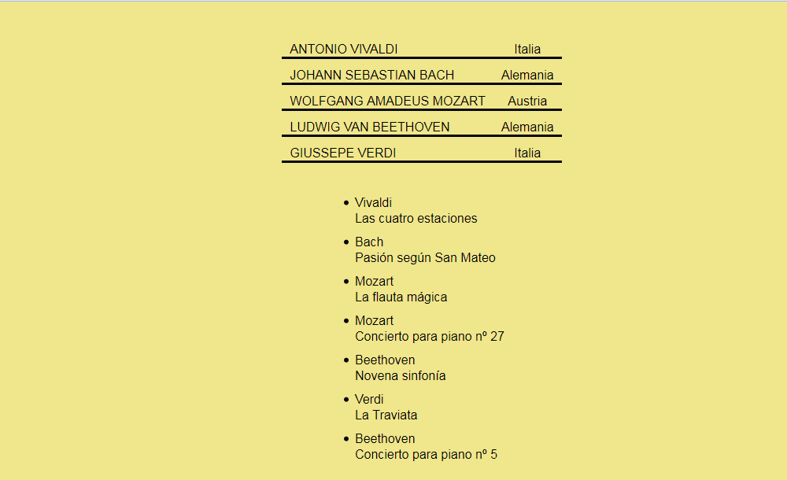

Resuelva los siguientes ejercicios guardando las respuestas en una carpeta cuyo nombre contenga su nombre y apellidos.
Corrija los errores del siguiente documento para que esté bien formado.
<documento>
<?xml version="1.0" encodin="UTF-8"?>
<editorial nombre=Calleja>
<personajes>
<nombre>Pepito Conejo
</personaje>
</documento>
Escriba una hoja de estilo CSS para que el siguiente documento se vea en el navegador como muestra la imagen.
<?xml version="1.0" encoding="UTF-8"?>
<musica>
<musicos>
<musico id="Vivaldi">
<nombre>Antonio Vivaldi</nombre>
<fechas nacimiento="1678" muerte="1741" />
<pais>Italia</pais>
</musico>
<musico id="Bach">
<nombre>Johann Sebastian Bach</nombre>
<fechas nacimiento="1685" muerte="1750" />
<pais>Alemania</pais>
</musico>
<musico id="Mozart">
<nombre>Wolfgang Amadeus Mozart</nombre>
<fechas nacimiento="1756" muerte="1791" />
<pais>Austria</pais>
</musico>
<musico id="Beethoven">
<nombre>Ludwig van Beethoven</nombre>
<fechas nacimiento="1770" muerte="1827" />
<pais>Alemania</pais>
</musico>
<musico id="Verdi">
<nombre>Giussepe Verdi</nombre>
<fechas nacimiento="1813" muerte="1901" />
<pais>Italia</pais>
</musico>
</musicos>
<obras>
<obra>
<autor>Vivaldi</autor>
<nombre>Las cuatro estaciones</nombre>
<genero nombre="concierto">
<instrumento>violín</instrumento>
<instrumento>orquesta</instrumento>
</genero>
</obra>
<obra>
<autor>Bach</autor>
<nombre>Pasión según San Mateo</nombre>
<genero nombre="oratorio">
<instrumento>tenor</instrumento>
<instrumento>barítono</instrumento>
<instrumento>bajo</instrumento>
</genero>
</obra>
<obra>
<autor>Mozart</autor>
<nombre>La flauta mágica</nombre>
<genero nombre="ópera">
<instrumento>tenor</instrumento>
<instrumento>barítono</instrumento>
<instrumento>bajo</instrumento>
</genero>
</obra>
<obra>
<autor>Mozart</autor>
<nombre>Concierto para piano nº 27</nombre>
<genero nombre="concierto">
<instrumento>piano</instrumento>
<instrumento>orquesta</instrumento>
</genero>
</obra>
<obra>
<autor>Beethoven</autor>
<nombre>Novena sinfonía</nombre>
<genero nombre="sinfonía">
<instrumento>orquesta</instrumento>
<instrumento>coro</instrumento>
</genero>
</obra>
<obra>
<autor>Verdi</autor>
<nombre>La Traviata</nombre>
<genero nombre="ópera">
<instrumento>soprano</instrumento>
<instrumento>tenor</instrumento>
</genero>
</obra>
<obra>
<autor>Beethoven</autor>
<nombre>Concierto para piano nº 5</nombre>
<genero nombre="concierto">
<instrumento>piano</instrumento>
<instrumento>orquesta</instrumento>
</genero>
</obra>
</obras>
</musica>

A partir del mismo documento XML del ejercicio 2, escriba las expresiones XPath que devuelvan exactamente las respuestas indicadas en los cuadros. Escriba todas las expresiones XPath en un único fichero de texto, numerando las respuestas.
Antonio Vivaldi
Johann Sebastian Bach
Wolfgang Amadeus Mozart
Ludwig van Beethoven
Giussepe Verdi
La flauta mágica
La Traviata
<autor>Mozart</autor>
<autor>Beethoven</autor>
<nombre>Wolfgang Amadeus Mozart</nombre>
Las cuatro estaciones
La Traviata
nacimiento="1813"
A partir del mismo documento XML del ejercicio 2, escriba y enlace las hojas de estilo XSLT que devuelvan las respuestas indicadas en los cuadros. Los espacios y saltos de línea no son importantes.
<?xml version="1.0" encoding="UTF-8"?>
<p>Antonio Vivaldi nació en Italia en 1678 y vivió 63 años.</p>
<p>Johann Sebastian Bach nació en Alemania en 1685 y vivió 65 años.</p>
<p>Wolfgang Amadeus Mozart nació en Austria en 1756 y vivió 35 años.</p>
<p>Ludwig van Beethoven nació en Alemania en 1770 y vivió 57 años.</p>
<p>Giussepe Verdi nació en Italia en 1813 y vivió 88 años.</p>
Nota: Para restar valores, escriba la resta en el atributo select.
<?xml version="1.0" encoding="UTF-8"?>
<musica>
<musico id="Vivaldi" pais="Italia">
Antonio Vivaldi
<nacido>1678</nacido>
<fallecido>1741</fallecido>
</musico>
<musico id="Bach" pais="Alemania">
Johann Sebastian Bach
<nacido>1685</nacido>
<fallecido>1750</fallecido>
</musico>
<musico id="Mozart" pais="Austria">
Wolfgang Amadeus Mozart
<nacido>1756</nacido>
<fallecido>1791</fallecido>
</musico>
<musico id="Beethoven" pais="Alemania">
Ludwig van Beethoven
<nacido>1770</nacido>
<fallecido>1827</fallecido>
</musico>
<musico id="Verdi" pais="Italia">
Giussepe Verdi
<nacido>1813</nacido>
<fallecido>1901</fallecido>
</musico>
<obra autor="Vivaldi" genero="concierto">Las cuatro estaciones</obra>
<obra autor="Bach" genero="oratorio">Pasión según San Mateo</obra>
<obra autor="Mozart" genero="ópera">La flauta mágica</obra>
<obra autor="Mozart" genero="concierto">Concierto para piano nº 27</obra>
<obra autor="Beethoven" genero="sinfonía">Novena sinfonía</obra>
<obra autor="Verdi" genero="ópera">La Traviata</obra>
<obra autor="Beethoven" genero="concierto">Concierto para piano nº 5</obra>
</musica>